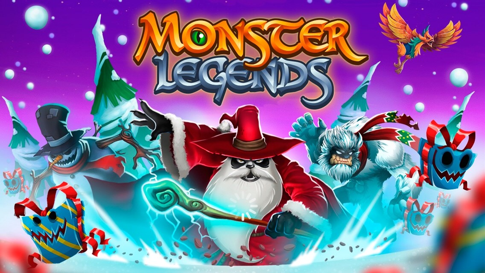

Monster Legends
O jogo é desenvolvido pela Social Point e é grátis para jogar. Pode ser jogado no Facebook ou num telefone Android, baixando um aplicativo da Google Playstore. A parte mais importante do jogo é Monsters e existem nove elementos deles - Fogo, Água, Natureza, Trovão, Luz, Magia, Terra escura, Terra e Legendário. Em sua maioria, estará criando dois elementos diferentes para combiná-los e criar um híbrido.O jogo tem um mapa de aventura onde você vai vagar e batalhar contra seus inimigos. Há cem níveis no jogo e você encontrará um chefe para lutar no final de cada cinco níveis. Passar a cada nível irá recompensar-lhe comida, ouro e experiência. Se você conseguir matar um chefe, você receberá recompensas muito maiores e XP. O ponto onde este jogo se torna interessante é a criação .
Menu Inicial |